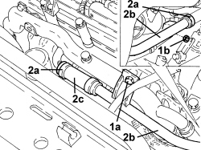

1088D33 WATER PUMP FEED INTERMEDIATE PIPING - R R
- Path
- Procedures > 10 ENGINE > 1088 ENGINE COOLING > 1088D COOLANT PIPES AND HOSES > 1088D33 WATER PUMP FEED INTERMEDIATE PIPING - R R
- Kind
- repair procedure (removal / refitting; the operation number is the code)
- Applies to
- engines: 1.9 JTD 8v, 1.9 JTD 16v; all production periods
- Interactive page
- https://sloeber94.github.io/elrnDB-fCrm/en/#/194002203
Applies to: engines: 1.9 JTD 8v, 1.9 JTD 16v; all production periods
 Removing
Removing
 Refitting
RefittingOp. 5530B52 BATTERY SUPPORT/DRIP TRAY - R.R
Op. 7055B54 UNDER ENGINE PROTECTION/GUARD - R.R.
1. Undo the radiator coolant drain plug.

Applies to: engines: 1.9 JTD 8v, 1.9 JTD 16v; all production periods
1. Undo the bolt (1a) and the nut (1b) fixing the water pump intermediate rigid supply pipe.
2. Loosen the bands (2a) and remove the water pump rigid intermediate supply pipe (2b) complete with hose (2c).

Applies to: engines: 1.9 JTD 8v, 1.9 JTD 16v; all production periods
- Working at the bench, loosen the band and separate the water pump rigid intermediate supply pipe from the hose.
Applies to: engines: 1.9 JTD 8v, 1.9 JTD 16v; all production periods
Refitting
Removing- Assemble the water pump rigid intermediate supply pipe and the hose and tighten the band.
- Place the water pump rigid intermediate supply pipe, complete with hose, in position and secure it using the bands.
- Tighten the bolt and the nut fixing the water pump intermediate rigid supply pipe.
- Tighten the coolant drain plug to the radiator.
Op. 7055B54 UNDER ENGINE PROTECTION/GUARD - R.R.
Topics linked from this page (4)
- 0010T20 ENGINE COOLANT - CHANGE
- 5530B10 BATTERY - R+R
- 5530B52 BATTERY SUPPORT/DRIP TRAY - R.R
- 7055B54 UNDER ENGINE PROTECTION/GUARD - R.R.